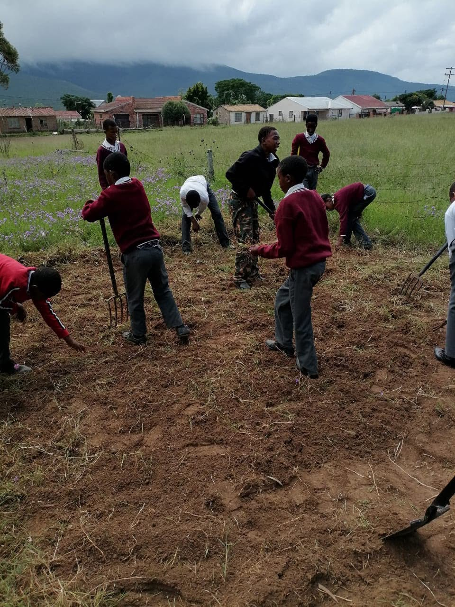

01
Youth Mentorship & Skills Development
We offer workshops, mentorship and training opportunities that help young people develop important career, personal and life skills.
- Career and life-skills development
- Youth mentorship and empowerment
- Educational support
- Personal development opportunities